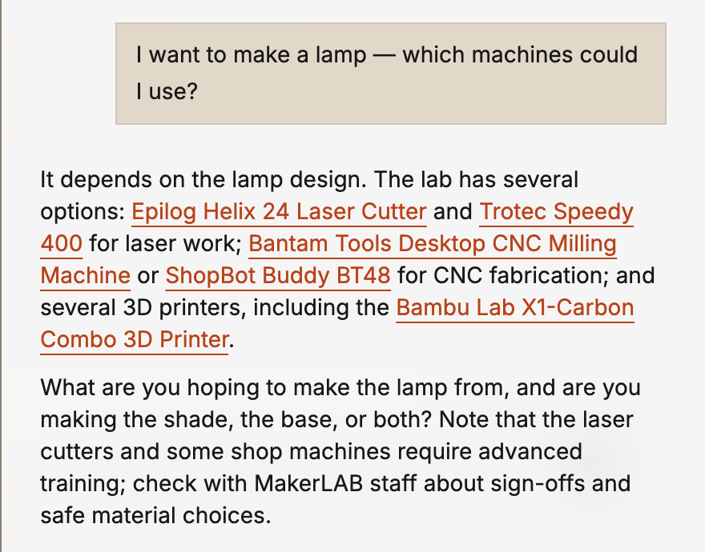

Abstract—Academic makerspaces run on operational knowledge (manuals, setup procedures, safety rules, inventory and repair history) that sits in shared drives, vendor sites and staff memory, mostly in English. At the Cornell Tech MakerLAB, students arrive at every skill level and staff are not always on the floor, so that knowledge reaches them unevenly. We ask whether an AI grounded in a lab’s own inventory and records can help students operate machines, debug them and create multi-machine builds without waiting for staff, and what keeps it honest, safe and cheap. We demonstrate MakerLAB AI, the assistant inside MakerLAB Tools, a web platform, its code public, in use at the lab. Its answers cite the lab’s catalog and a searchable archive of about 54 machine manuals (≈2,400 pages) down to the page, and it says when a manual is silent. Students file maintenance tickets from the chat, and the AI offers to file one while it helps debug. Staff add equipment from a photo or a list: research to create a curated tool record runs in the background and nothing is published until a person approves it. A kiosk shows live machine status, a projects gallery links student work to the machines that made it, and anonymous usage insights estimate staff hours saved and after-hours coverage. Built AI-first, the catalog, manuals and everyday actions are also served over the Model Context Protocol (MCP), so visitors can use the lab from their own AI client. The interface is in 12 languages, and the assistant answers in the student’s language.
1. Motivation and Research Question
The project began on the Cornell Tech MakerLAB floor. An intern (Miguel) built the first inventory search; a student and volunteer “SuperMaker” (Isaac) kept hunting for manuals whenever he was fixing the laser cutters and 3D printers; the Director (Niti) asked whether a student could describe a project and have an AI help plan it. Three needs recur, each routed today to a person: to operate a machine (where is it, how do I start, what training and PPE?), to debug it when it faults mid-job, and to create: plan a build across several machines. Our question is whether one assistant, grounded in the lab’s own records rather than the open web, can meet all three at any hour, and what guardrails make that trustworthy enough for a shared shop. We keep three names apart: the MakerLAB is the physical lab, MakerLAB Tools the platform, MakerLAB AI the assistant.
2. System
Records, not a list. MakerLAB Tools (Next.js on Vercel, live at makerlab-ai.vercel.app) keeps tools, individual units, locations, resources, maintenance tickets and projects in Postgres with file storage, and mirrors them one way to Notion, where staff already work. The catalog lists about 100 tools. Each tool page shows training level, PPE, location, linked manuals and SOPs, and every unit’s status.
Grounded answers. Manuals and SOPs are archived, their text extracted (scanned PDFs are read with OCR), split into passages and indexed for hybrid keyword-and-vector search with reranking. The assistant searches them and cites the page it used (Fig. 1); when nothing supports an answer, it says so and sends the student to staff for safety and sign-offs. Opened on a tool page, the chat starts from that machine’s record and manuals.
Acting, with a person in the loop. Students report a fault in plain language and the chat files a ticket against the right unit. Staff add inventory at scale, from a photo or a pasted list: the model identifies each item, background research gathers manuals, specifications and a product image (a deterministic cutout, never a generated redraw), and a staff member approves each draft before it is published. More broadly, the assistant is offered exactly what the signed-in user could do in the interface, but never acts itself: it shows a confirmation card drawn from the database, and nothing changes until the person presses Confirm. Irreversible changes require typing the item’s name, and after reading outside text (a web page, a manual, a ticket) it refuses changes to people or anything irreversible.
Public dashboard. A full-screen kiosk (Fig. 2) shows down machines, open tickets, hours and a QR code that opens the assistant on a visitor’s phone. A projects gallery links each project to the machines used. An insights page reports questions answered, the share handled without staff, estimated staff hours saved and the share asked outside staffed hours, from anonymous usage events. A Model Context Protocol (MCP) [1] endpoint lets any MCP client, such as Claude [2] or ChatGPT [3], list tools, read units and maintenance history and search the manuals. The code is public [4].

3. Process and Results
The system is built spec-first: each feature starts as a written design with open questions for the engineer and ships with automated tests (6,831 offline tests on 30 Sep 2026). Model behaviour is checked by a paid evaluation harness of 59 conversational cases (operate, debug and create questions, manual grounding and citations, honest “I don’t know”, maintenance and staff actions, refusing unsafe changes). Early use. Designing a 3D-printed case for a device with an AI coding agent, the first author let the agent query the lab’s inventory over MCP: it found which printers were available and their build volumes, and the case was sized to fit before anything was printed. Grounding an AI’s fabrication plan in the machines a lab actually has is the create need in practice. Costs are small: about 0.03¢ in model fees for a chat turn that searches a manual, about 2–5¢ to research one new tool, and $0.013 to index 20 manuals for search. Fig. 3 shows a create answer.

4. The Demonstration
Visitors drive the live system. Operate and debug: on an iPad open to the Bambu Lab X1-Carbon page, or on their own phone via the kiosk’s QR code, they ask how to start a print or why it fails, follow the cited manual page, and file a ticket. Create: on a laptop, they describe something to make and get a plan mapped to the lab’s machines. Add a tool: on a second, staff laptop, they photograph an object and watch it become a researched draft awaiting approval, with every change confirmed on a card. Bring your own AI: an optional laptop connects Claude or ChatGPT to the MCP endpoint. The kiosk runs on a TV throughout, on live lab data. Requirements: one table, power, reliable Wi-Fi, and a monitor or TV; we bring the laptops, the iPad and cables.
5. Discussion and Next Steps
The assistant is deployed; its effect on students is not yet measured. The insights page logs, anonymously, what is asked, what goes unanswered and when; this term we will compare ticket volume, machine downtime and after-hours questions against staff estimates. Limits: answers are only as good as the archived manuals, many of which are thin on troubleshooting. Next: AI planning for digital fabrication across the lab’s machines, recurring maintenance, notifications, and a framework other labs, starting with Cornell’s other campuses, can adopt while keeping their own identity.
Acknowledgements
We thank the MakerLAB staff, SuperMakers and interns at Cornell Tech and Cornell University, and the students who make the lab. Use of generative AI (ISAM policy): Isaac Steinberg designed the system and directed and reviewed all of its code, which was written with the AI coding assistants Claude Code (Anthropic) and Codex (OpenAI). This abstract was drafted and revised with Anthropic’s Claude from the authors’ notes and the project’s specifications; the authors checked each claim and figure against the running system. The answers in Figs. 1 and 3 are unedited output of the deployed assistant, which uses commercial language models through the Vercel AI Gateway.
References
[1] Anthropic, “Model Context Protocol,” 2024. [Online]. Available: https://modelcontextprotocol.io. [Accessed: Sep. 28, 2026].
[2] Anthropic, “Claude,” 2023. [Online]. Available: https://www.anthropic.com/claude. [Accessed: Sep. 28, 2026].
[3] OpenAI, “ChatGPT,” 2022. [Online]. Available: https://openai.com/chatgpt. [Accessed: Sep. 28, 2026].
[4] I. Steinberg, “MakerLAB Tools,” GitHub repository, 2026. [Online]. Available: https://github.com/philosophercode/makerlab-tools. [Accessed: Sep. 28, 2026].